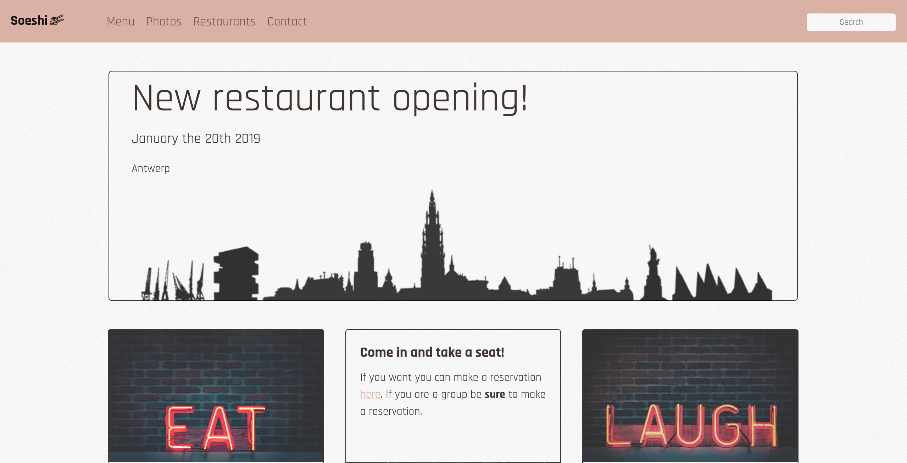

https://paulineeds.github.io/restaurant-css-framework/
A website for a restaurant franchise with bootstrap. With a few topics
The site has to be responsive: it needs to be adapted to small devices (xs) and middle big devices(md)
At least 5 pages accessible by a navbar on every page. A link to the different sections: Home, Menu, pictures, Restaurants and Contact.
